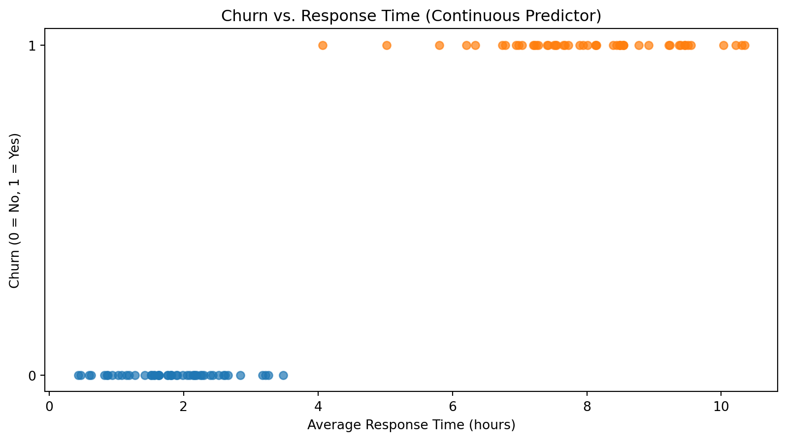
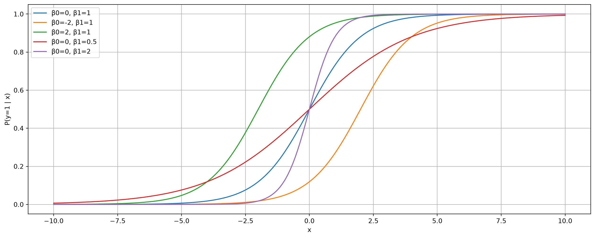
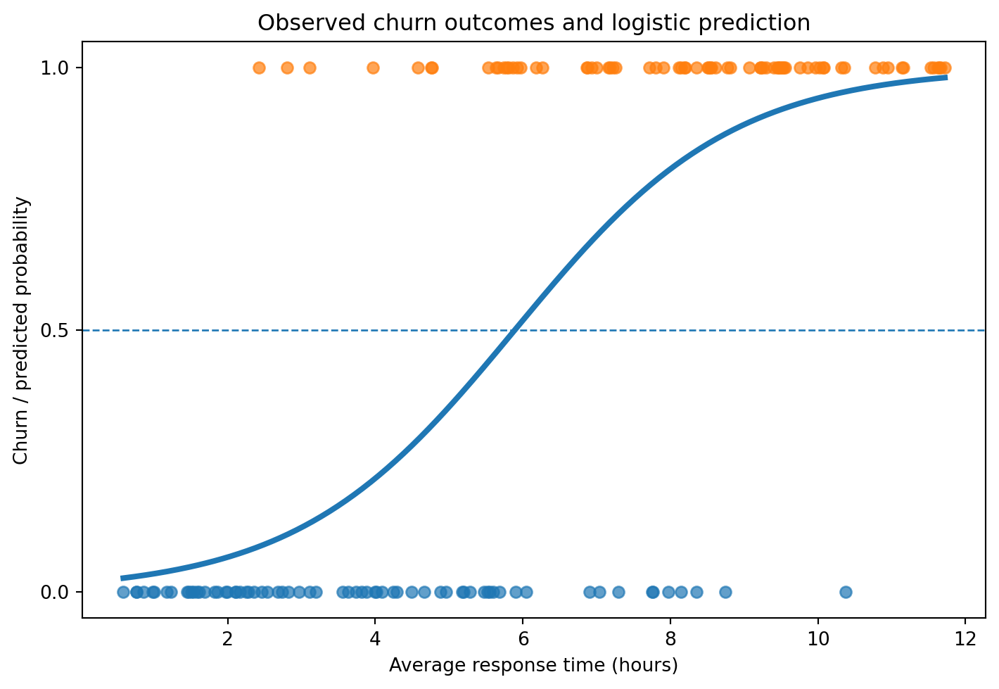
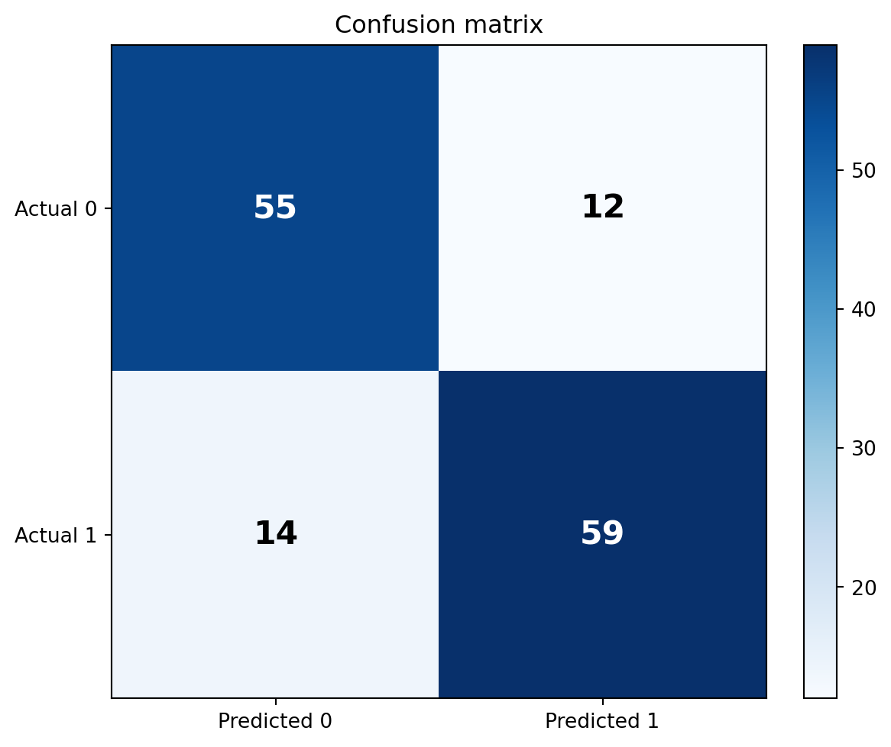
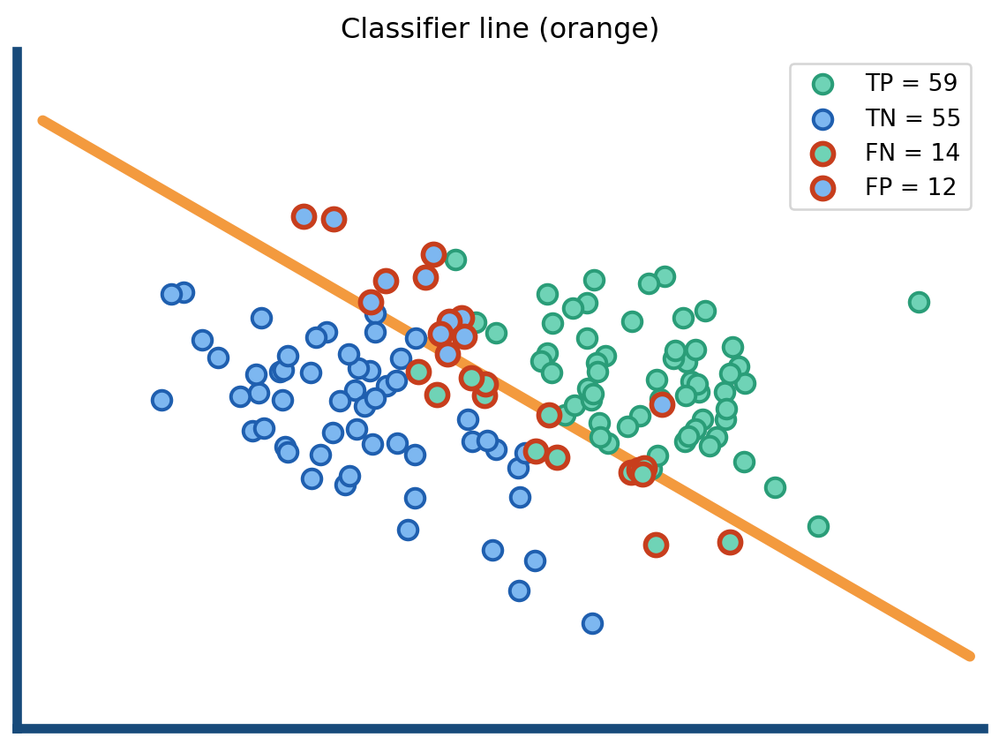
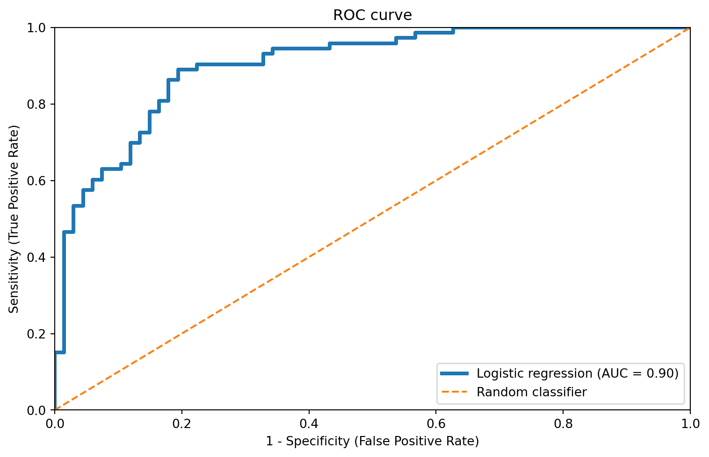

Prof. Dr. Gerit Wagner
(2026-04-14)
A lost customer is often a predictable customer. Firms collect many traces of customer relationships — usage, spending, support interactions, contract data. The analytical challenge is to turn these traces into an early warning system.
Typical variables in a churn dataset
Prediction goal
Predict:
\[P(\text{churn}=1 \mid X)\]
where \(X\) contains the observed customer characteristics and behaviors.
Churn prediction is a binary classification problem:

Possible approach: We could use Linear Regression with a threshold at 0.5 to classify output:
y=0y=1Examples:
\[y \in \{0,1\}\] with
0: “Negative class” (e.g., no fraud, no churn, no spam)
1: “Positive class” (e.g., fraud, churn, spam)
Ideally, our model should predict the probability of \(y_i=1\). This would allow us to apply a threshold for classification, but it would also give us more information (how likely an observation belongs to the positive class).
This means we need a model that produces predicted probabilities between 0 and 1:
Step 1: Linear model
\[z_i = \beta_0 + \beta_1 x_i\]
Step 2: Transform to probability via sigmoid function
\[\mathbb{P}(y_i = 1 \mid x_i) = \sigma(z_i) \text{ with } \sigma(z) = \frac{1}{1 + e^{-z}}\]
Logistic regression model
\[\mathbb{P}(y_i = 1 \mid x_i) = \frac{1}{1 + e^{-(\beta_0 + \beta_1 x_i)}}\]
Key intuition:
Logistic regression assumes that the log-odds of the outcome are linear in the predictors:
\[\log\left(\frac{p_i}{1 - p_i}\right) = \beta_0 + \beta_1 x_i\]
Note: \(\frac{p_i}{1 - p_i}\) are the “odds”.
This implies a sigmoid-shaped relationship between \(x_i\) and the probability of \(y_i=1\):
\[p_i = \frac{1}{1 + e^{-(\beta_0 + \beta_1 x_i)}}\]
The sigmoid function serves as a link function to convert the linear predictor into a probability.

Note
Instead of minimizing squared errors, logistic regression chooses parameters that make the observed data most likely.
Core idea: We want predicted probabilities to match observed outcomes:
Likelihood function
For each observation: \(P(y_i \mid x_i) = p_i^{y_i} (1 - p_i)^{1 - y_i}\)
For all observations:
\[L(\beta) = \prod_{i=1}^n p_i^{y_i} (1 - p_i)^{1 - y_i}\]
Maximization: Choose \(\beta_0, \beta_1\) to maximize this likelihood
No need to memorize the formula. Understand the idea.
We estimate the model using the sklearn library:
import pandas as pd
from sklearn.linear_model import LogisticRegression
df = pd.DataFrame({
"response_time": [1, 2, 3, 5, 7, 8, 9, 11],
"churn": [0, 0, 0, 0, 1, 1, 1, 1]
})
X = df[["response_time"]]
y = df["churn"]
model = LogisticRegression()
model.fit(X, y)
print("Intercept (β0):", model.intercept_[0])
print("Slope (β1):", model.coef_[0][0])Intercept (β0): -6.201807152628621
Slope (β1): 1.0606214874843112Logistic regression coefficients are not directly effects on probability. They describe effects on the log-odds.
Coefficient meaning
\[\log\left(\frac{p}{1-p}\right) = \beta_0 + \beta_1 x\]
More intuitive: odds ratios
Exponentiate the coefficient: \(e^{\beta_1}\)
Factor change in the odds
Example:
Important implication
A logistic regression model predicts a probability of churn:
\[ P(\text{churn}_i=1\mid x)=\frac{1}{1+e^{-(\beta_0+\beta_1 x_i)}} \]
A threshold (such as 0.5) is needed to convert probabilities into class labels.
Comparing predicted vs. actual class labels allows us to evaluate the performance of a classifier like logistic regression.

Using a 0.5 threshold, predicted probabilities are turned into classes.
The confusion matrix summarizes:


| Metric | Formula | Value | Interpretation |
|---|---|---|---|
| Accuracy | \(\frac{TP+TN}{TP+TN+FP+FN}\) | 81.4% | Overall share of correct predictions |
| Precision | \(\frac{TP}{TP+FP}\) | 83.1% | Among predicted positives, how many are actually positive? |
| Recall | \(\frac{TP}{TP+FN}\) | 80.8% | Among actual positives, how many did the model identify? |
| F1 | \(2\cdot\frac{\text{Precision}\cdot\text{Recall}}{\text{Precision}+\text{Recall}}\) | 81.9% | Balance between precision and recall |
ROC (Receiver Operating Characteristic) curve summarizes the trade-off between:
As we vary the classification threshold, the model becomes more or less conservative in predicting churn = 1.
Area under the curve (AUC) summarizes ROC performance in a single number:
A good classifier achieves:
→ curves closer to the top-left corner indicate better model fit.

A logistic regression model predicts a probability of churn:
\[ p(x) = P(\text{churn}=1 \mid x) \]
This probability is based on historical data, reflecting how similar customers behaved in the past, and capturing a baseline churn risk. It is not a certainty.
Suppose a firm has two possible actions:
So the business problem is no longer only:
Who is likely to churn?
It becomes:
For whom is an intervention worth it?
We can use the expected value criterion to translate predictions into decisions by combining:
A simple payoff structure:
| Action | Customer would churn | Customer would stay |
|---|---|---|
| Intervene | +20 | -10 |
| Do nothing | -100 | 0 |
Interpretation:
| Action | Customer would churn | Customer would stay |
|---|---|---|
| Intervene | +20 | -10 |
| Do nothing | -100 | 0 |
Probabilities:
If we intervene, the expected value is:
\[EV(intervene) = p(x)\cdot 20 + (1-p(x))\cdot (-10) = 30p(x) - 10\]
If we do nothing, the expected value is:
\[ EV(do\_nothing) = p(x)\cdot (-100) + (1-p(x))\cdot 0 = -100p(x) \]
Instead of selecting one action, we should intervene whenever:
\[ EV(intervene) > EV(do\_nothing) \]
Insert the expected values:
\[ p(x)\cdot 20 + (1-p(x))\cdot (-10) > -100p(x) \]
Simplify:
\[ 20p(x) -10 +10p(x) > -100p(x) \]
\[ 130p(x) > 10 \]
\[ p(x) > 0.077 \]
This gives a clear rule:
Intervene if \(p(x) > 0.077\) (if predicted churn probability exceeds 7.7%).
The threshold is low because:
So even a small churn probability can justify action.
This decision combines two complementary inputs:
1. Data-driven component
2. Business-driven component
The model produces probabilities — not decisions.
There are multiple ways to set a threshold for classification, depending on the context.
A decision only emerges when probabilities are combined with a chosen threshold —
this is where predictive analytics becomes prescriptive analytics.
Logistic regression is a classification model and represents a basic form of machine learning:
It is:
Logistic regression is often the first model to try — simple, transparent, and surprisingly effective.
New challenges in machine learning
1. Overfitting
2. Role of data
3. Evaluation
4. Model tuning
| Logistic regression | Machine learning models |
|---|---|
| Linear decision boundary | Can learn nonlinear boundaries |
| Strong assumptions | Fewer assumptions |
| Selected variables | Many variables (high-dimensional) |
| Interpretable | Often less interpretable |
Key shift: